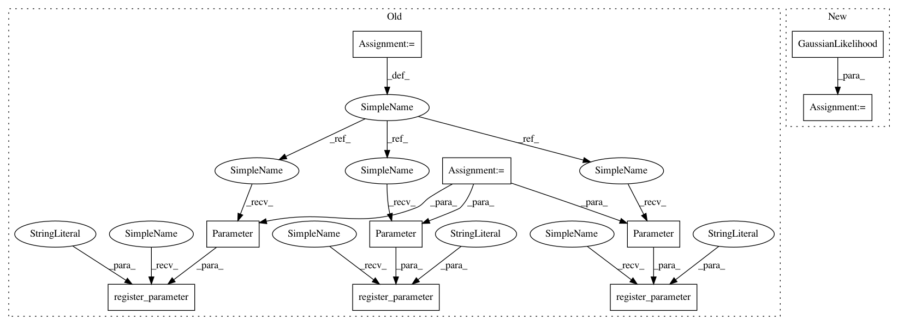

b61a525baee25d2ea31ab088540dd4d2ffed2251,test/examples/multitask_gp_regression_test.py,MultitaskGPModel,__init__,#MultitaskGPModel#,27
Before Change
self.mean_module = ConstantMean()
self.covar_module = RBFKernel()
self.task_covar_module = IndexKernel()
self.register_parameter("constant_mean", nn.Parameter(torch.randn(1)), bounds=(-1, 1))
self.register_parameter("log_noise", nn.Parameter(torch.randn(1)), bounds=(-6, 6))
self.register_parameter("log_lengthscale", nn.Parameter(torch.randn(1)), bounds=(-6, 6))
self.register_parameter("task_matrix", nn.Parameter(torch.randn(2, 1)), bounds=(-6, 6))
self.register_parameter("task_log_vars", nn.Parameter(torch.randn(2)), bounds=(-6, 6))
def forward(self, x, i):
mean_x = self.mean_module(x, constant=self.constant_mean)
After Change
class MultitaskGPModel(gpytorch.GPModel):
def __init__(self):
likelihood = GaussianLikelihood(log_noise_bounds=(-6, 6))
super(MultitaskGPModel, self).__init__(likelihood)
self.mean_module = ConstantMean(constant_bounds=(-1, 1))
self.covar_module = RBFKernel(log_lengthscale_bounds=(-6, 6))
self.task_covar_module = IndexKernel(n_tasks=2, rank=1, covar_factor_bounds=(-6, 6), log_var_bounds=(-6, 6))
In pattern: SUPERPATTERN
Frequency: 3
Non-data size: 10
Instances
Project Name: cornellius-gp/gpytorch
Commit Name: b61a525baee25d2ea31ab088540dd4d2ffed2251
Time: 2017-08-15
Author: gpleiss@gmail.com
File Name: test/examples/multitask_gp_regression_test.py
Class Name: MultitaskGPModel
Method Name: __init__
Project Name: cornellius-gp/gpytorch
Commit Name: b61a525baee25d2ea31ab088540dd4d2ffed2251
Time: 2017-08-15
Author: gpleiss@gmail.com
File Name: test/examples/multitask_gp_regression_test.py
Class Name: MultitaskGPModel
Method Name: __init__
Project Name: cornellius-gp/gpytorch
Commit Name: b61a525baee25d2ea31ab088540dd4d2ffed2251
Time: 2017-08-15
Author: gpleiss@gmail.com
File Name: test/examples/spectral_mixture_gp_regression_test.py
Class Name: SpectralMixtureGPModel
Method Name: __init__
Project Name: cornellius-gp/gpytorch
Commit Name: b61a525baee25d2ea31ab088540dd4d2ffed2251
Time: 2017-08-15
Author: gpleiss@gmail.com
File Name: test/examples/simple_gp_regression_test.py
Class Name: ExactGPModel
Method Name: __init__